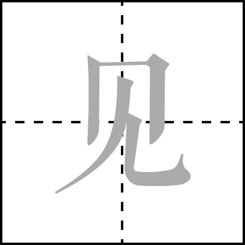

jiàn

1600 BC 甲骨
一棵树长出许多枝叶，本意是茂盛。
《说文》：“像木重枝叶也”。—— 《后上 105》
771 BC 金体
甲骨文树木的枝杈上部再加一重枝桠，“枝桠重叠”，表示枝叶茂盛。—— 《利簋》
221 BC 篆体
篆文承续甲骨文字形。未，味也。六月，滋味也。五行，木老於未。象木重枝葉也。凡未之屬皆从未。 ——《说文解字》
206 BC 隶体
否，不，没有。——《郭有道碑》
220 AD 楷体
不，不曾，沒有。 ——《高湛墓志》
220 AD 草体
用于記時。放在句末，表示疑問。—— 王羲之